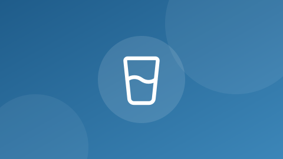

Combien d'eau stocker par personne pour 72 heures ?
Le guide « Tous responsables » fixe la règle : 6 litres d'eau potable par personne, en bouteilles, pour tenir 72 heures. Soit 2 litres par jour pour boire. Voici le calcul pour votre foyer, ce qu'il faut ajouter et comment stocker cette eau.

Informations pratiques, sources officielles (guide « Tous responsables » (SGDSN, 2025), Santé Canada). Elles ne remplacent pas les consignes des autorités. En cas d'urgence, appelez le 112 et suivez les consignes de la préfecture, de la radio et de FR-Alert.
Le calcul pour votre foyer
La règle officielle tient en une ligne : 6 litres × nombre de personnes.
| Personnes dans le foyer | Eau à stocker pour 72 h |
|---|---|
| 1 | 6 litres |
| 2 | 12 litres |
| 3 | 18 litres |
| 4 | 24 litres |
| 5 | 30 litres |
| 6 | 36 litres |
L'appli Tous prêts fait ce calcul automatiquement selon la composition de votre foyer.
Quand prévoir davantage
Hygiène et cuisine
- Les 6 litres couvrent la boisson
- Santé Canada conseille environ 2 litres de plus par personne et par jour pour se laver les mains, les dents et préparer les repas
Situations particulières
- Bébé nourri au lait en poudre : eau en bouteille pour les biberons (voir le kit bébé)
- Animaux : leur eau en plus (voir le kit animaux)
- Forte chaleur, grossesse, maladie : prévoir plus
Comment stocker l'eau
- Privilégiez des bouteilles scellées du commerce : petites bouteilles, plus faciles à transporter en cas d'évacuation.
- Rangez-les au frais, à l'abri de la lumière, loin des produits ménagers.
- Notez la date limite et faites tourner le stock : buvez les plus anciennes, remplacez-les. Le guide demande de vérifier le kit deux fois par an.
- Gardez quelques bouteilles en plastique fermées au congélateur, en laissant un peu de place pour la dilatation (jamais de verre) : en cas de coupure, elles gardent le froid puis deviennent de l'eau potable.
- En dernier recours, le guide prévoit des pastilles de décontamination de l'eau. Respectez la notice et le temps d'action.
Questions fréquentes
Combien de litres d'eau par personne pour 3 jours ?
6 litres par personne selon le guide « Tous responsables », soit 2 litres par jour pour boire.
Combien d'eau pour une famille de 4 ?
24 litres pour 72 heures, auxquels on peut ajouter de l'eau pour l'hygiène.
L'eau du robinet stockée en bouteille convient-elle ?
Les bouteilles scellées du commerce sont recommandées : elles se conservent mieux et leur date limite est indiquée.
À lire aussi
 Aliments sans cuissonQue manger pendant 3 jours sans électricité ni gaz ? Liste d'aliments sans cuisson ni frigo pour le kit 72h, conseils de stockage et pièges à éviter.
Aliments sans cuissonQue manger pendant 3 jours sans électricité ni gaz ? Liste d'aliments sans cuisson ni frigo pour le kit 72h, conseils de stockage et pièges à éviter. Frigo et congélateurFrigo fermé : environ 4 h. Congélateur plein : environ 48 h, à moitié plein : 24 h. Les bons gestes pendant la coupure et quoi jeter ensuite.
Frigo et congélateurFrigo fermé : environ 4 h. Congélateur plein : environ 48 h, à moitié plein : 24 h. Les bons gestes pendant la coupure et quoi jeter ensuite. Kit de survie 72 h : la listeListe complète du kit d’urgence 72h du gouvernement : eau, nourriture, radio, trousse… Version claire + checklist interactive gratuite adaptée à votre foyer.
Kit de survie 72 h : la listeListe complète du kit d’urgence 72h du gouvernement : eau, nourriture, radio, trousse… Version claire + checklist interactive gratuite adaptée à votre foyer.
Purifier l'eauÉbullition, pastilles de chlore ou filtre : ce qui marche contre les bactéries, les virus et les parasites. Durées et limites.